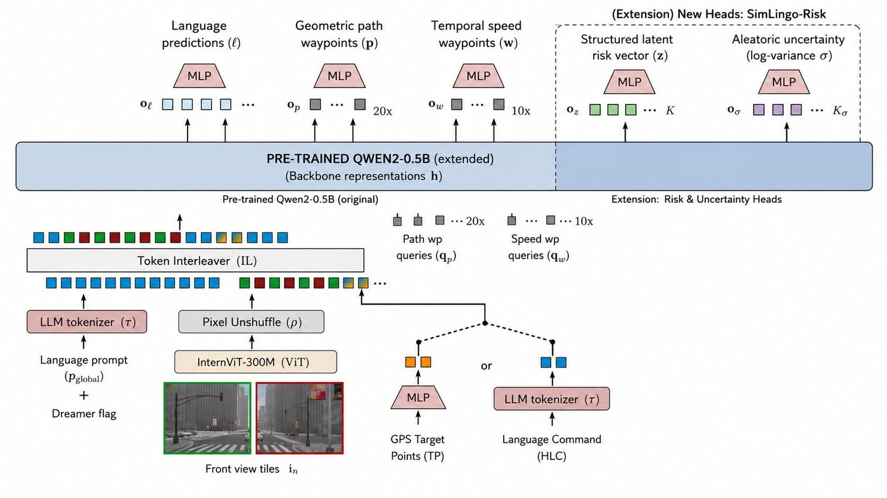

SimLingo-Risk
Building and testing a collision-risk monitor for a vision–language–action driving model
Advisor: Elad Amrani · Technion – Israel Institute of Technology
Code will be released publicly.
Idea
SimLingo drives from camera images and explains itself in words, but never says how dangerous a scene is. We read its frozen hidden state with a small probe (264K parameters) and show a collision-hazard score and an uncertainty live in CARLA. The monitor never changes how the car drives.

Results
0.960AUROC on held-out frames
0.748on an unseen scenario type
0.659which live routes collide (216 routes)
0.504when the collision happens (chance)
The score flags dangerous routes, not the moment of impact.